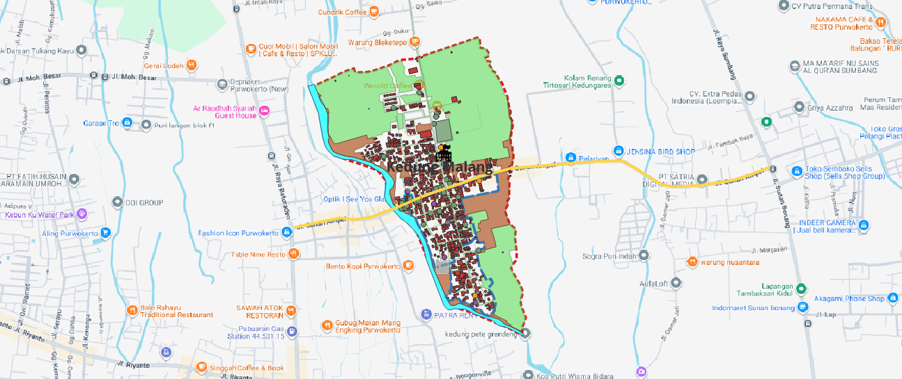

Preview Peta

Fitur Unggulan
Layers Berlapis
Tampilkan lapisan peta seperti batas administrasi, jalan, dan penggunaan lahan.
Unduh Data
Data geospasial tersedia dalam format Shapefile, GeoJSON, atau KML.
Pencarian Lokasi
Cari lokasi berdasarkan nama desa, kecamatan, atau koordinat.